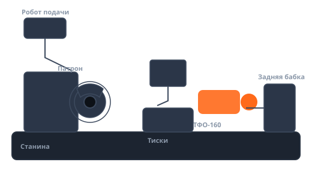

Токарно-винторезный 1М63
Изготовление червячных колёс малыми сериями в ручном режиме.
Нет ЧПУ — не проблема. Ось работает в ручном режиме с высокой точностью деления, а при установке моторов доступны автоматические циклы.

Кейсы установки на станки этой категории (демонстрационные описания).
Изготовление червячных колёс малыми сериями в ручном режиме.
Делительная оснастка; повторяемость цикла выдерживается отсчётом угла.
Работа в ручном режиме; позже установлены моторы — включены автоциклы.
База «Для ручного станка» будет выбрана автоматически — добавьте нужные модули.
Открыть калькулятор